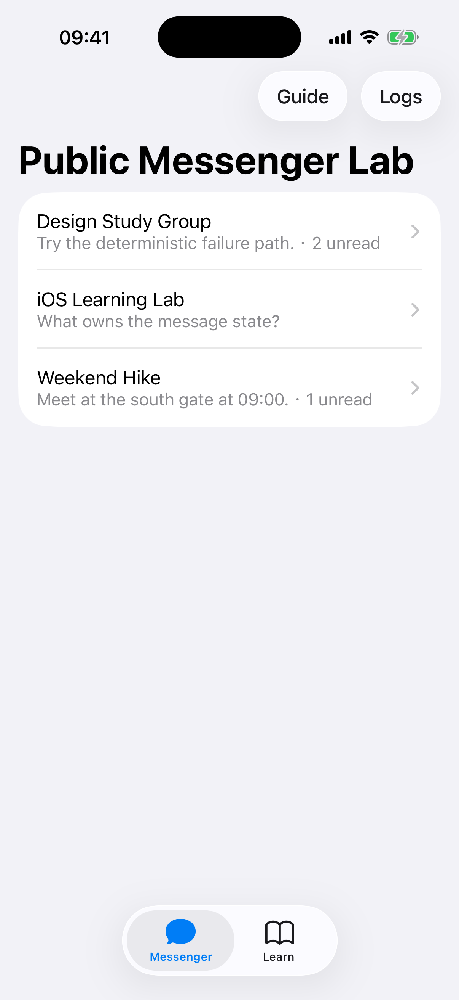
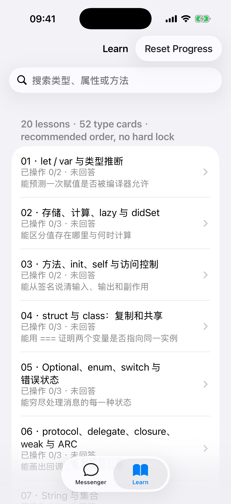
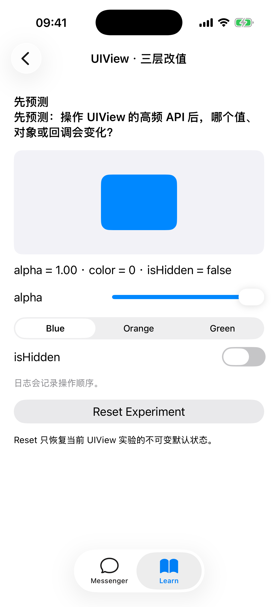

先改一个值，
再追到它为什么变化。
一个给零基础学习者的双入口实验室：在 Messenger 里追踪发送、失败和重试；在 Learn 里拆开 Swift、Foundation、UIKit 与业务类型。
A public, beginner-oriented iOS lab that connects visible UI changes, message delivery states, source code, LLDB, SIL, LLVM IR, and ARM64 evidence.
- Curriculum20节短课source count
- Type catalog52张唯一类型卡source count
- Compiler lab5个最小样本verified
- Test scenarios9 + 9Core / UIlocal release-check
System
两间实验室，共用一条证据链。
业务行为提供问题，类型实验拆解机制，编译器样本负责把观察继续向下追。
消息发送不是一次按钮点击
输入普通文本观察 queued → sending → sent；输入 /fail 走失败与同 id 重试。Repository、Transport 和 JSON Cache 都可打断点。
类型卡不是 API 百科
每张卡给出类型种类、属性、方法、owner 和本地实验入口；共享 renderer 按机制分组。课程可自由查看，进度只写“已操作 / 已回答”。
Real simulator output
不是概念稿，是可运行界面。
三张截图分别对应业务入口、课程目录和可直接改值的 UIView 实验。



Type explorer
打开 52 张卡，而不只看名字。
每张卡展示类型种类、模块、用途、类比、精选属性与方法、关系、课程和仓库内观察入口。网页公开知识元数据；52 个 type 与 18 个 concept 的 App、LLDB 与源码操作卡需在本地运行 ↗。
Compiler microscope
只下钻五个小于 20 行的样本。
避免把整页 UIKit 汇编误当成零基础教材，只定位能回答当前问题的函数与符号。
- Swift
- SILGen
- SIL
- LLVM IR
- ARM64
观察 getter / setter、值与引用、方法派发、闭包捕获和 enum 状态机。生成物进入忽略目录，不提交与某个 Xcode 版本绑定的整页汇编。
Evidence, not claims
1.0.0 发布门禁。
页面上的数字必须能回到源码、测试或构建结果，不能用展示文案替代验证。
- CoreXCTest
发送、失败重试、缓存、目录引用、依赖无环和旧进度迁移。
- UIXCUITest
本地
make release-check覆盖真实点击、Reset、delegate 顺序、导航身份、稳定 id、搜索与数据隔离。 - Compilerscript
五个样本均生成非空 SIL、IR 和 Debug / Optimized ARM64 片段。
- Publicaudit
部署 CI 覆盖 Core、构建、编译器、公开边界、页面资源与 Action SHA 固定审计。
Release evidence is reproducible from the public repository.
Run locally
5 分钟开始第一次预测。
需要 macOS、Xcode 16+ 和 iOS 17+ Simulator。所有业务数据与失败回执都在本地生成。
git clone https://github.com/estelledc/SwiftMessengerLab.git
cd SwiftMessengerLab
make build
make run
# 编译器显微镜
make compiler-lab SAMPLE=property-accessPublic boundary
刻意不做什么。
不连接真实聊天服务，不复制商业客户端实现，不包含内部接口或材料，不逆向 UIKit 二进制。动画、手势、多媒体、SwiftUI、Objective-C 混编、账号、附件、推送和加密不属于 1.0.0。